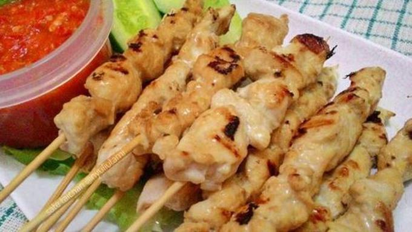
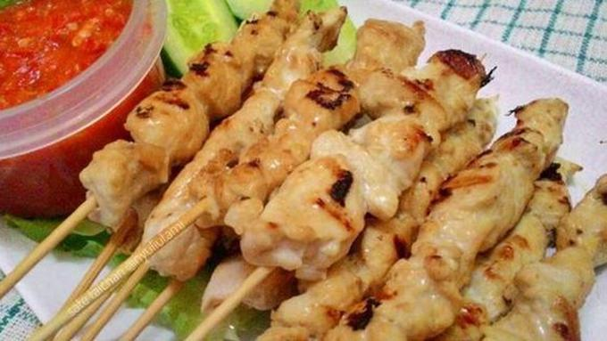
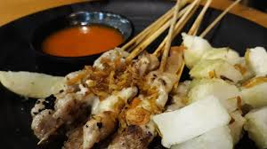
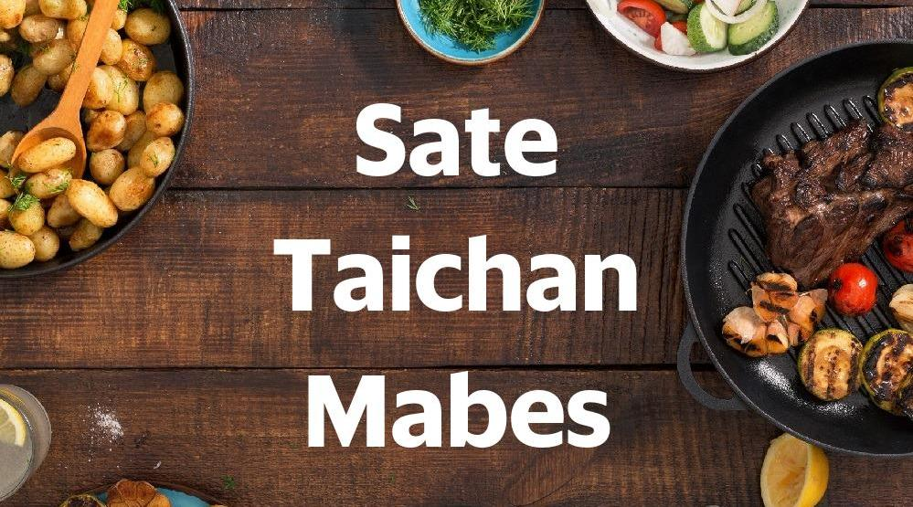
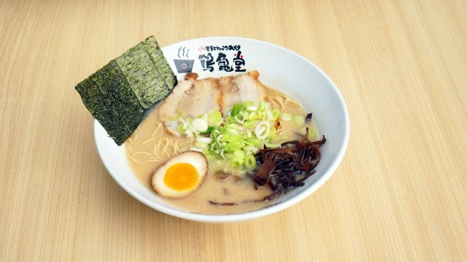
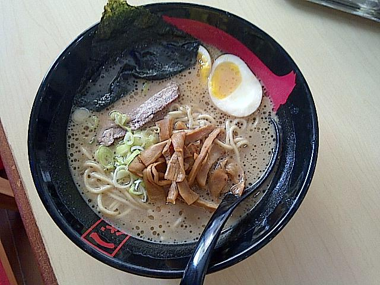

1. Sate Taichan Bang Ocit A
Sate Taichan Bang Ocit 87 kerap disebut-sebut sebagai pelopor sate taichan di Jakarta. Resep sate taichan yang dijual di sini, nyatanya membuat banyak pelanggan ketagihan. Mereka rela antre sebelum lapak digelar.
Sate taichan sendiri adalah sate ayam yang dibakar tanpa kecap dan bumbu kacang. Hidangan ini berawal dari pedagang kaki lima di daerah Senayan, Jakarta dan kini menyebar sampai seluruh Indonesia.
Sate Taichan Bang Ocit 87 kerap disebut-sebut sebagai pelopor sate taichan di Jakarta. Resep sate taichan yang dijual di sini, nyatanya membuat banyak pelanggan ketagihan. Mereka rela antre sebelum lapak digelar.
Sate Taichan Pak Gendut turut meramaikan pilihan sate taichan di kawasan Senayan. Tepatnya di area parkir Senayan City yang jaraknya hanya sekitar 1,7 Km dari Stadion Gelora Bung Karno. Berangkat dari GBK Teman Traveler hanya butuh waktu sekitar 8 menit menggunakan kendaraan untuk sampai lokasi
Sate Taichan Pak Gendut nggak pelit bawang goreng. Aroma bawang berpadu dengan daging ayam yang empuk, menciptakan rasa yang bikin ketagihan. Satu porsi sate taichan di sini, dihargai mulai dari Rp30 ribu. Setiap harinya kuliner Jakarta ini buka dari pukul 15.00-23.00 WIB.
Sate Taichan Mabes punya sajian yang cukup berbeda dengan sate-sate taichan di kawasan Senayan lainnya. Sebab, antara sate dan sambalnya disajikan terpisah. Teman Traveler yang suka pedas, bisa mencocolkannya pada sambal, sementara yang tidak, bisa langsung menyantapnya.
Ramen merupakan makanan khas asal Jepang yang sudah memiliki banyak penggemar di Indonesia. Buat kamu para pecinta ramen, kali ini CG! akan kasih rekomendasi restoran ramen di Jakarta yang wajib dicicipi! Here you go!
Location: Jalan Ratu Kemuning Raya Blok A2 No. 82, Jakarta Barat
Tsurukamedou Ramen merupakan resto ramen yang memiliki citarasa otentik dengan Hakata Style Super Tonkotsu Ramen yang menyediakan ramen tradisional khas Jepang. Nggak hanya bahan makanannya saja yang diimport langsung dari Jepang, Tsurukamedou Ramen juga memiliki chef asli negeri Sakura, yaitu Chef Takashi Nagata. Menu favorit yang rekomendasi untuk dipesan, antara lain Tonkotsu Ramen, Tonkotsu Shisen Ramen, Spicy Tori Karaage dan Buta Gyoza Grilled.
Location: Jalan Radio Dalam Raya No. 20, Kebayoran Baru, Jakarta Selatan
Ichidaigen Ramen menawarkan ramen 100% halal yang nggak mengandung pork sama sekali. Sebagai gantinya mereka menggunakan kaldu dari daging sapi yang membuat kuah ramen menjadi kental, milky dan less oily. Yum yum! Pilihan menu ramen yang menjadi favorit, yaitu Shoyu Ramen dan Yoichi Ramen. Kekenyalan mi ramen dan kuahnya yang kaya rasa membuat siapa saja yang mengunjungi ramen house ini akan datang kembali.